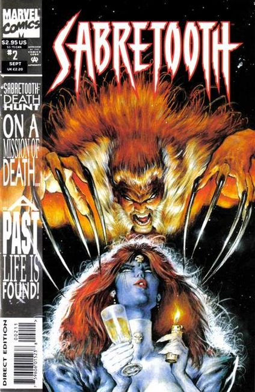
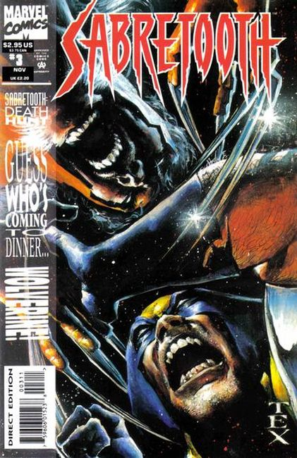
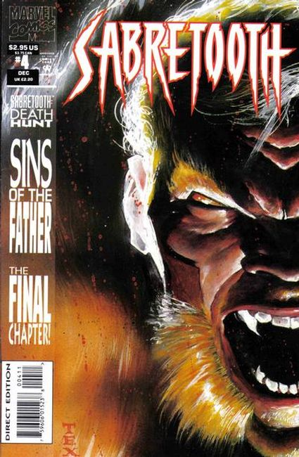

"Home is the Hunter" Sabretooth is tied down to an operating table with a bomb placed inside his chest; Tribune wants him to kill Mystique. The story takes place after the events in Wolverine #64.Wolverine appearance. Sabertooth pinup by Travis Charest. Sabertooth pinup by Michael Golden. Back cover art by Mark Texeira.

"A Kiss Before Dying" Sabretooth must kill Mystique, but he first goes after Birdy for betraying him; Mystique goes to the Eiffel Tower for her date with Wolverine. Sabertooth pinup by Michael Blair.

"City of Light, City of Night" Sabretooth and Wolverine battle on the Eiffle Tower; Mystique breaks it apart and reveals why she knows so much about Sabretooth; Wolverine leaves Mystique after discovering she has been with Sabretooth and had a kid.

"Sins of the Fathers!" Sabretooth tracks down his son, Graydon, and throws him out of a window; a doctor removes the bomb from Sabretooths chest.